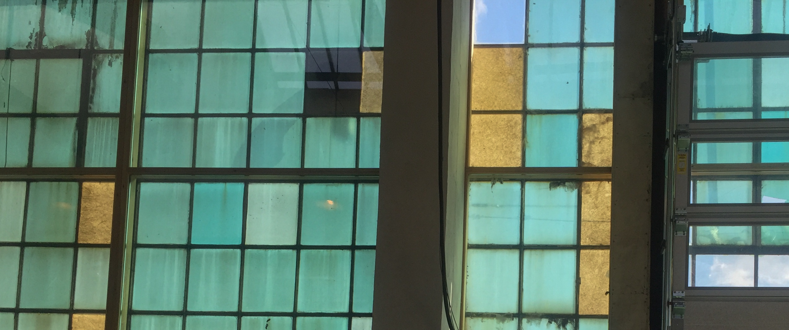
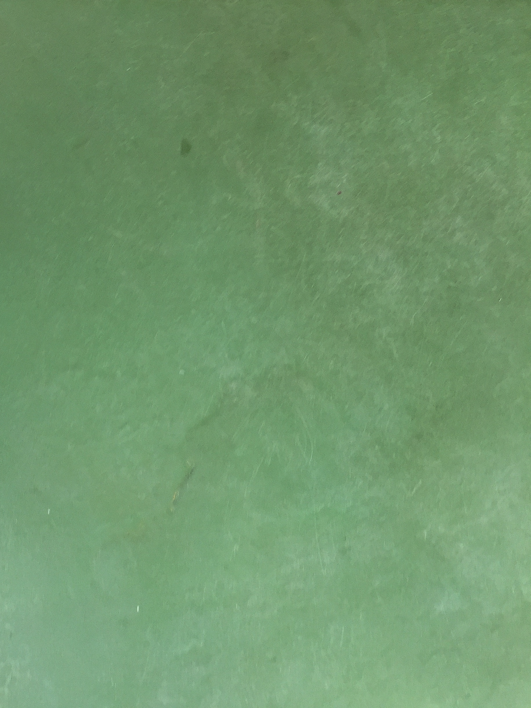
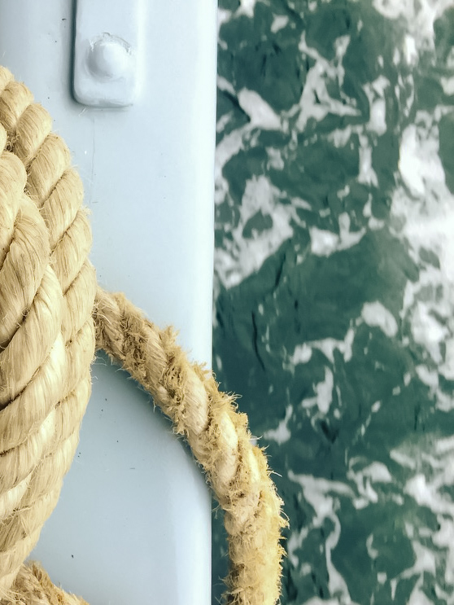

I would like to:
explore more about planning a digital solution in a brand/company.
be a part of the concept development of an interactive web design.
explore how to contribute to the creation of great visual content.
know how to execute a digital project in a brand/company.
I dream of becoming the designer who codes.
I am very passionate about web development and creating a visual identity. For me it’s all about bringing those creative thoughts and ideas into a user-friendly solution. My focus is visual design, concept development and front-end design.
